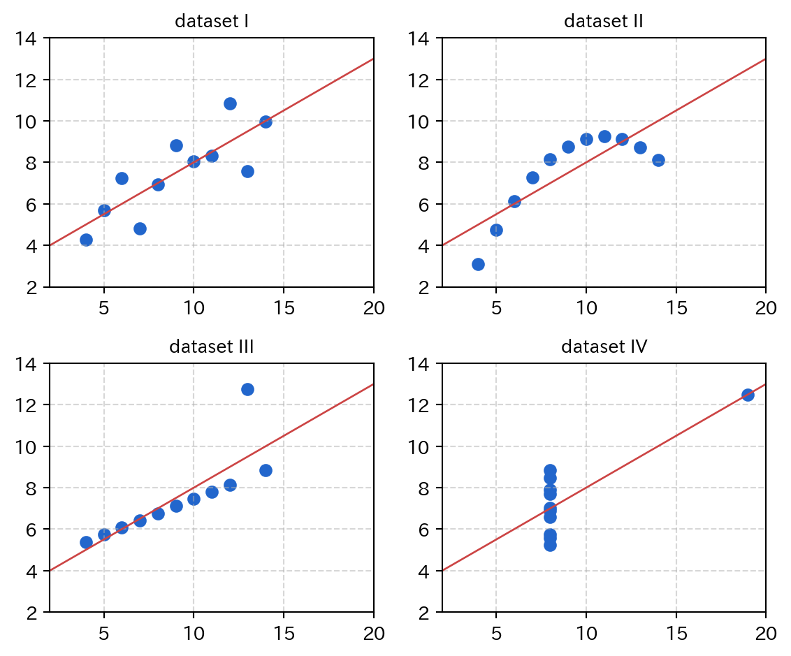
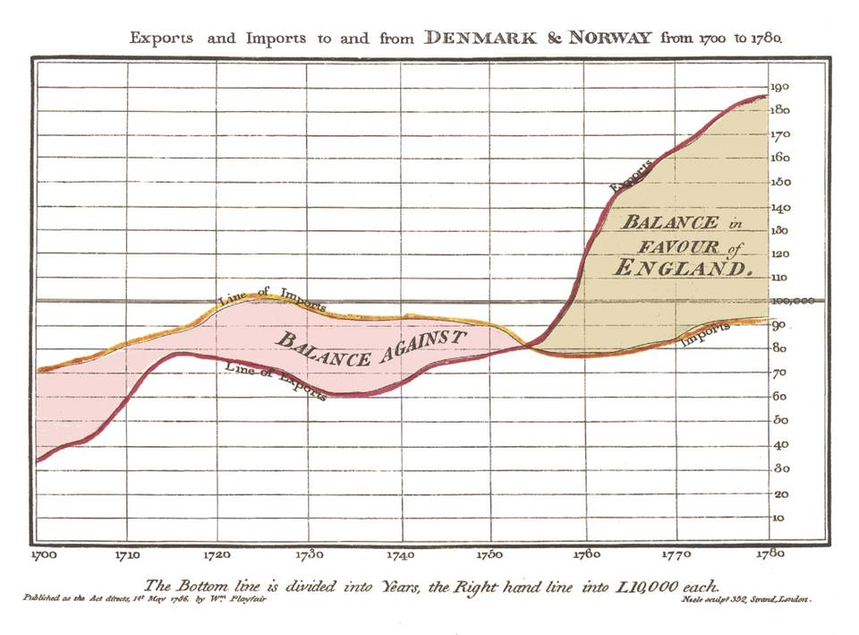
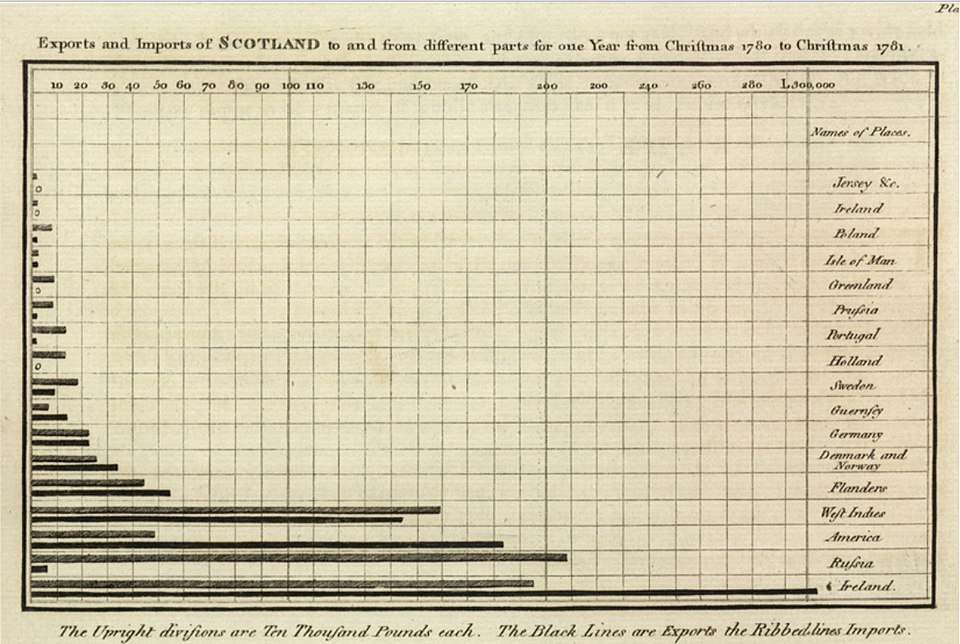
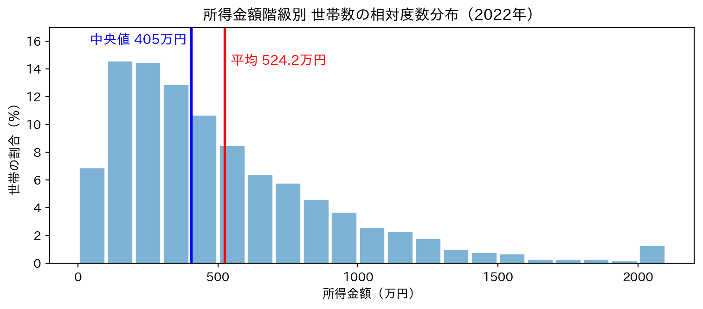
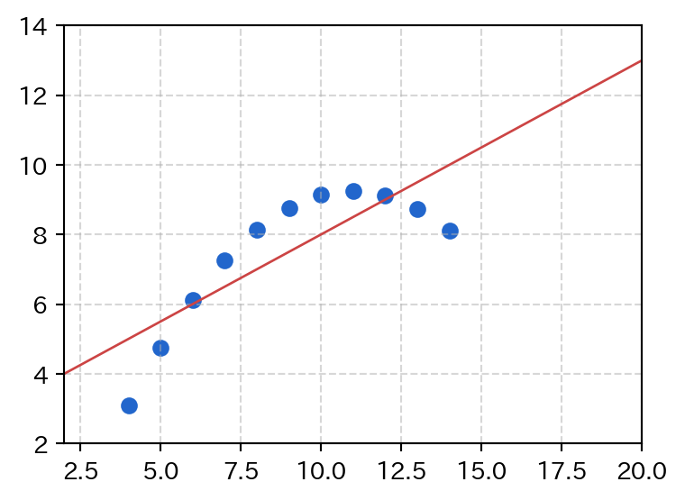
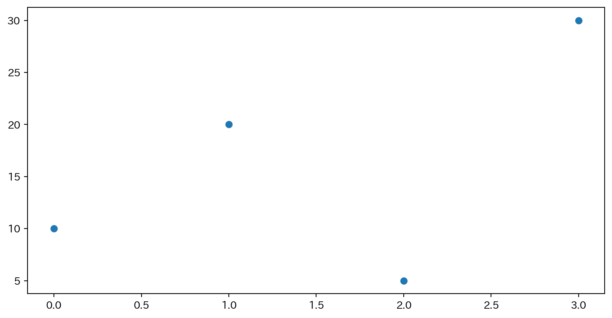
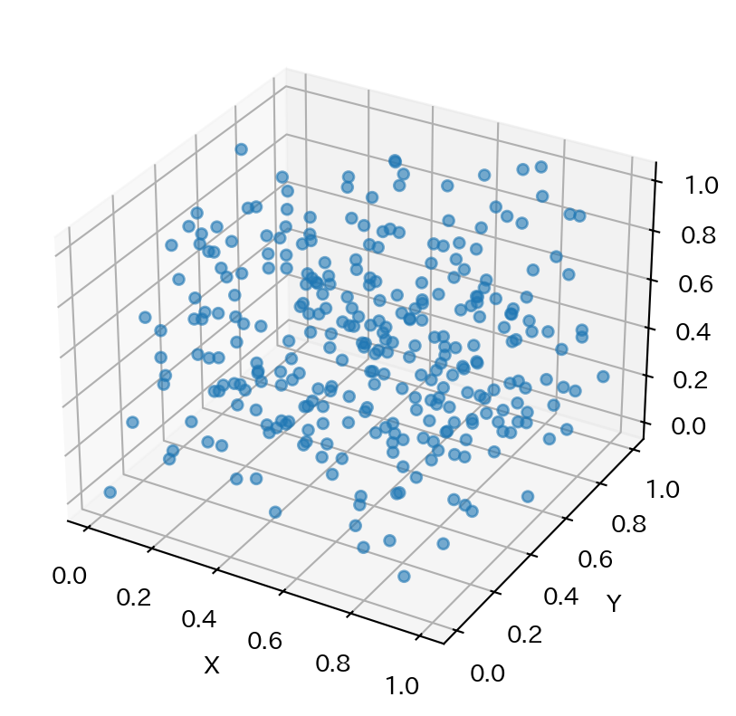
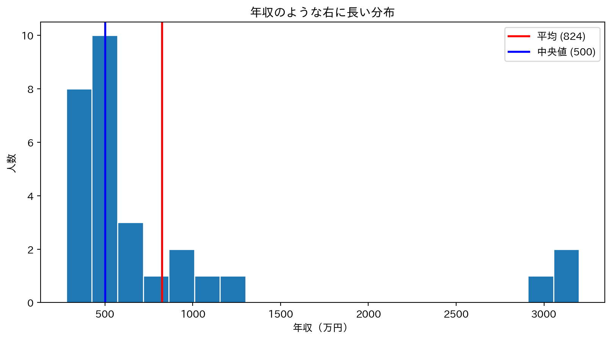
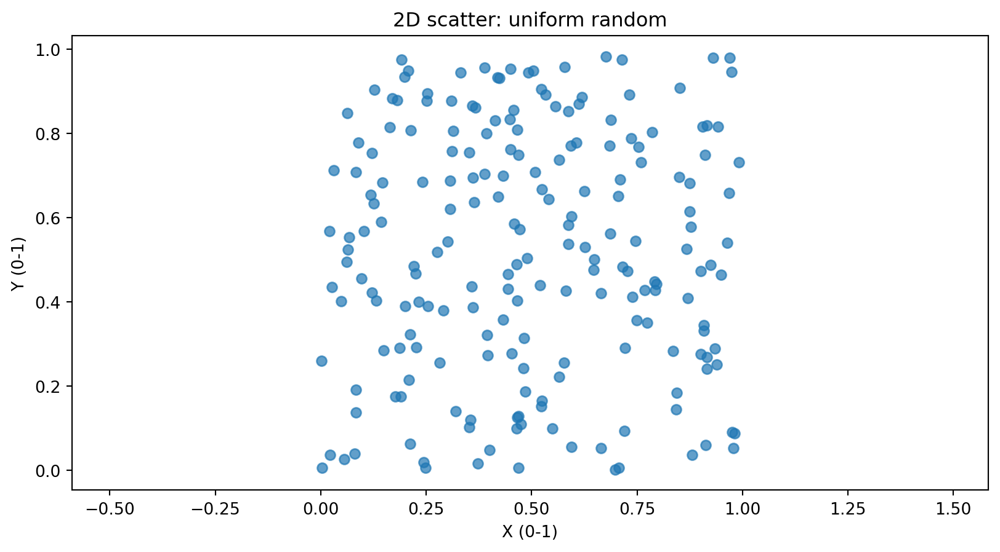
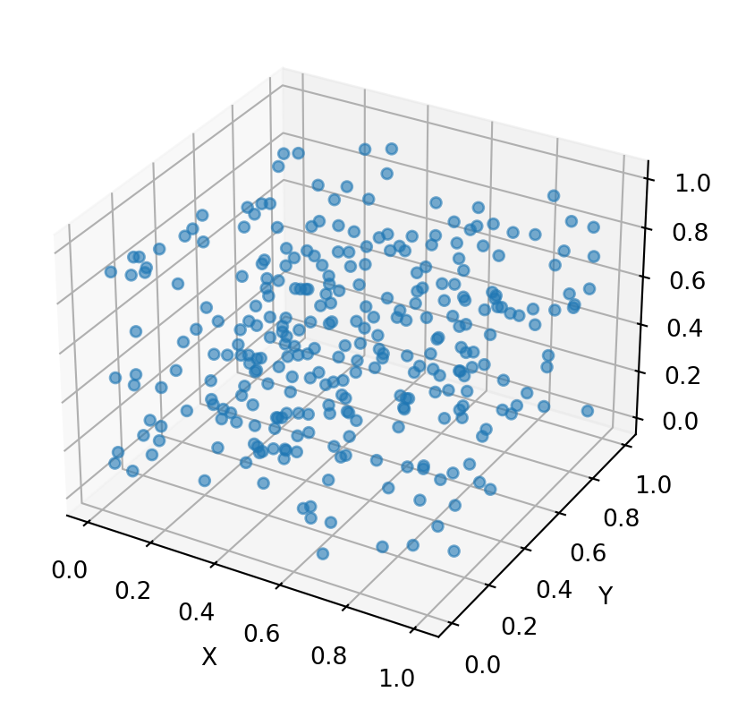

データの可視化
matplotlibで「見える化」する
rkskmt
情報可視化とは
情報可視化とは？
- データや情報がもつ 関係性 や 特徴 を、視覚的に見て理解できるようにすること
- 見えないものを 「見える」化
- 人間の 視覚・直感・経験 で共通に扱えるようにする
- 情報視覚化ともいう
- Information Visualization
- Data Visualization
なぜ「見る」のか
- 数字の表を眺めても気づけないパターン（外れ値、相関、周期性、クラスタ）が見える
- 図示は最強の前処理
可視化の古典：ジョン・スノウのコレラ地図
- 1854年、ロンドンで原因不明の病気が大流行
- 医師 John Snow が原因調査をおこなう
- 感染データを地図にプロットしたところBroad Street の井戸の周囲に感染者が集中していることを発見
- 「水が感染源」という仮説を視覚で立証
- 疫学 という分野の出発点とされる
数的グラフの始祖：ウィリアム・プレイフェア
- William Playfair（1759–1823）はスコットランドの技師・経済学者
- 現代の 棒グラフ・折れ線グラフ・円グラフ を すべて発明
- 1786年：Commercial and Political Atlas で折れ線・棒グラフを初めて使用
- 1801年：Statistical Breviary で円グラフ（パイチャート）を発明
スノウとプレイフェア
- スノウ — 視覚化で 因果関係を発見 し、社会を変えた
- プレイフェア — 視覚化の 形式そのもの を発明した
プレイフェアの折れ線グラフ（1786）

イングランドの国家債務の推移
- 時間を横軸、量を縦軸にとる — 現代の時系列グラフの原型
プレイフェアの棒グラフ（1786）

スコットランドの輸出入（1780–1781）
- カテゴリ（貿易相手国）を並べて 長さで比較 — 棒グラフの誕生
プレイフェアの円グラフ（1801）

トルコ帝国の領土配分
- 全体に対する 割合を角度で表現 — 円グラフの誕生
プレイフェアの問い：なぜ数字を図にするのか
Making information available, for thought and memory, without the trouble of studying rows of figures.
── William Playfair, Commercial and Political Atlas (1786)
- 数字の羅列を眺める 苦労を省く ためにグラフを描く
- 200年以上前に「視覚化の本質」を言い当てていた
可視化の本質
「データに 適切な空間（軸） を与えること」
現代の可視化実例
| ジャンル | サンプル |
|---|---|
| 人口動態 | Population Pyramids of the World |
| 未来予測ゲーム | INED “Tomorrow’s Population” |
| 気候変動 | #ShowYourStripes |
| 統計バブル | Gapminder “Wealth & Health of Nations” |
| ネットワーク | Force-Directed Graph |
| 地理 + 時系列 | NYC CitiBike |
| 3D点群 | Cesium “3D Tiles Point” |
自分の興味で1つ開いてみる
- 動的なものほど データ量と表現力の関係 がよく分かる
データを扱う際の大原則
“Always plot your data first.”
あらゆるデータは、まず最初に「見て」みる
- 平均や分散などの 統計量だけでは騙される
- 図にしてはじめて気づける構造がある
- データ分析の最初の一手は 常にプロット
例：アンスコムの四重奏
- F. J. Anscombe（1973） が示した4つのデータセット
- 以下の統計量が 4つともほぼ完全に一致 する
- でも、図にすると完全に異なるデータ
| 統計量 | 値 |
|---|---|
| \(x\) の平均 | 9 （完全に一致） |
| \(x\) の標本分散 | 11 （完全に一致） |
| \(y\) の平均 | 7.50 （小数第2位まで一致） |
| \(y\) の標本分散 | 4.122 or 4.127 （小数第3位まで一致） |
| \(x\) と \(y\) の相関係数 | 0.816 （小数第3位まで一致） |
| 回帰直線 | \(y = 3.00 + 0.500x\) （小数第2〜3位まで一致） |
アンスコムの四重奏 ①：普通のデータ
- ばらつきはあるが ゆるやかに直線的に増える
- 線形回帰の前提（直線関係 + 均一なばらつき）が成立
- 典型的な普通のデータ

教訓
- 回帰直線が データの要約として正しく機能
- 4つの中で線形モデルが成立する 唯一の例
アンスコムの四重奏 ②：曲線にフィッティング
yが 滑らかな曲線（2次関数的）を描いている- 直線を当てはめても本質を捉えられない
- 統計量だけ見ていると「直線で説明できた」と思い込みやすい

教訓
- そもそも 直線で表現すべきでない データ
- 多項式回帰や対数変換などモデルを変える必要あり
- 統計量だけだと モデル選択ミス に気づけない
アンスコムの四重奏 ③：1つだけ外れ値
- ほぼ 完全な直線 に並んでいる
- たった1点だけ大きく外れている
- その1点に 回帰直線が引っ張られている

教訓
- 外れ値（outlier） に統計量が支配される
- 入力ミスとして除外するか、本物の現象として尊重するか
- 図を見ないと判断できない
アンスコムの四重奏 ④： 共通した値を共有したデータ
xの値が ほぼすべて 8- 1点だけ
x=19にあり、その1点が「直線がある」ように見せている - 同じ条件で測定しすぎていて、
xが振れていない

教訓
- サンプリングが偏っている
- 1点だけで「相関がある」と言っているのと同じ
- 実験計画（データの取り方）そのもの を疑うべきケース
4つを並べると…
| データ | 見た目 | 何が問題か |
|---|---|---|
| ① 素直 | 緩やかな散布 + 直線 | 問題なし — 線形回帰がうまく機能 |
| ② 曲線 | 2次関数的 | モデル選択が間違っている |
| ③ 外れ値 | 直線 + 1個ハズレ | 外れ値が統計量を支配 |
| ④ x偏り | 1点除いて全部同じ x | サンプリングが偏っている |
- 統計量は4つとも同じ
- 図にしないと 絶対に気づけない
だからデータ処理=まず視覚化
見ればわかる。見なければ見逃す。
探索的データ解析（EDA）
- テューキー（Tukey） が1977年の著書 Exploratory Data Analysis で提唱
- 「まずデータを 見て から仮説を立てる」という原則
- 統計学の前段として現在も基本中の基本
- 箱ひげ図・幹葉図など、Tukeyが広めた可視化手法は多数
Tukey
“bit”（binary digit の短縮形）や “software” の生みの親
グラフの種類
- まずは簡単なグラフやプロットでよい
- 目的に応じて使い分ける
| 種類 | 用途 |
|---|---|
| 散布図 | 2変量の相関 |
| 折れ線 | 時系列・連続データ |
| 棒グラフ | カテゴリ比較 |
| ヒストグラム | 分布把握 |
| 3D散布図 | 3変量関係 |
matplotlibでグラフを描く
matplotlib とは
- Pythonにおけるグラフ描画の デファクトスタンダード
- マットプロットリブと読む
- 内部はC実装で高速、NumPyの
ndarrayと相性が良い- seaborn や pandas の plotting 機能など、派生ライブラリも多い
ターミナルからインストール：
冒頭で import（plt としてインポートするのが一般的）：
まずはドキュメントを眺める（重要）
- 公式の Plot types ページに、描けるグラフの一覧がある
- https://matplotlib.org/stable/plot_types/index.html
上達のコツ
- まず 何ができるかを頭に入れる
- やりたい図ができたら、似たギャラリーを探してコードを真似る
- 自前でゼロから書かない のが鉄則
1. 点のプロット
- 一番基本の
plt.plot(x, y, 'o')— ‘o’ は マーカー を表す xもyもndarrayやlistでOK
2. 線のグラフ
- 第3引数を 省略すると折れ線
'o-'だと 点＋線
3. 表示範囲の指定（xlim / ylim）
plt.xlim(a, b)/plt.ylim(a, b)で軸の範囲を固定- 3次元プロットでは
zlimも使える - 何も指定しないと データの範囲＋少し余白 が自動で選ばれる

y軸の罠
- 範囲をデータに合わせると 小さな変化が大きく見える ことがある
- 比較するグラフは y軸を揃える か 0から見せる のが原則
4. ラベル・グリッド・タイトル・凡例
plt.xlabel()/plt.ylabel()で 軸ラベルplt.title()で グラフタイトルplt.legend()で 凡例（plot()にlabel=を指定しておく）plt.grid(True)で グリッド線
import numpy as np
import matplotlib.pyplot as plt
x = np.arange(10, 200)
y1 = x ** (1/2)
plt.plot(x, y1, 'o-', label="sqrt(x)") # 凡例ラベル
y2 = x ** (1/3)
plt.plot(x, y2, 'o-', label="cbrt(x)")
plt.legend() # 凡例を表示
plt.title("1/2 vs 1/3 power") # タイトル
plt.xlabel("x value") # x軸ラベル
plt.ylabel("y value") # y軸ラベル
plt.grid(True) # グリッド線
plt.show()
装飾の優先順位
- 軸ラベル（何の量か）
- 凡例（どの線が何か）
- タイトル（何のグラフか）
- この3つが揃っていない図は 資料に載せてはいけない
5. 複数のグラフを並べる（subplot）
plt.subplot(行数, 列数, 場所番号)で碁盤の目状に並べる- 場所番号は 1始まり、左上から右へ
- 例：
plt.subplot(2, 2, 3)は2×2の3番目（左下）
1 │ 2
─┼─
3 │ 4
6. 二次元データの散布図
- 大量の
(x, y)を点で打つ → 分布や相関が見える alphaで 透明度 を指定すると重なりが分かりやすい

重なりが多いとき
alpha=0.3などで透過 → 密度が見える- 点数が万を超えるなら ヒートマップ や hexbin を検討
7. 三次元データの散布図
- 3D は
add_subplot(projection="3d")で軸オブジェクトを作る plt.◯◯ではなくax.◯◯で操作する

なぜ 3D だけ ax. を使う？
plt.scatter()などは 2D専用のショートカット- 3D軸を作るには
projection="3d"の指定が必要で、plt.subplot()では対応できない - 3D では
ax.scatter(),ax.set_zlabel()など 軸オブジェクト経由 で操作する
plt. と ax. の対応
2D（plt.） |
3D（ax.） |
|---|---|
plt.scatter(x, y) |
ax.scatter(x, y, z) |
plt.xlabel("X") |
ax.set_xlabel("X") |
plt.xlim(0, 10) |
ax.set_xlim(0, 10) |
plt.title("...") |
ax.set_title("...") |
3Dは多用しない
- 紙やスライドだと 奥行きが伝わらない ことが多い
- インタラクティブに回せない場面では 2Dの分割表示 のほうが伝わる
plt早見表
| 操作 | コード |
|---|---|
| 点だけ | plt.plot(x, y, 'o') |
| 折れ線 | plt.plot(x, y) |
| 棒グラフ | plt.bar(x, y) |
| 散布図 | plt.scatter(x, y) |
| 軸の範囲 | plt.xlim(a, b) / plt.ylim(a, b) |
| 軸ラベル | plt.xlabel("...") / plt.ylabel("...") |
| タイトル | plt.title("...") |
| 凡例 | plt.legend()（要 label=...） |
| グリッド | plt.grid(True) |
| 並べる | plt.subplot(行, 列, 番号) |
| 3D散布 | ax = fig.add_subplot(projection="3d") |
演習1：二次関数を描く
- \(y = x^2 - 2x + 3\) を 定義域 \(-2 \leq x \leq 5\) で描け
- 手順
np.arangeまたはnp.linspaceでxを作る（線が滑らかになるように細かく）yを計算- プロット — 折れ線でもOK
- Y軸は0から見えるように
ylimを設定 - タイトルとラベルもつける
平方完成で検算
- \(y = (x - 1)^2 + 2\) なので 頂点は \((1, 2)\)
- グラフが合っているか確認
解答例を見る
演習2：アンスコムの四重奏を再現
- 手順
- 下のデータをコピペして使う
plt.subplot(2, 2, i)で2×2に並べる- それぞれ
scatterでプロット np.polyfit(x, y, 1)で1次回帰直線を求め、plotで重ねる- すべてのサブプロットで
xlim/ylimを 揃える
import numpy as np
# データセット I, II, III（x は共通）
x1 = np.array([10, 8, 13, 9, 11, 14, 6, 4, 12, 7, 5])
y1 = np.array([8.04, 6.95, 7.58, 8.81, 8.33, 9.96, 7.24, 4.26, 10.84, 4.82, 5.68])
y2 = np.array([9.14, 8.14, 8.74, 8.77, 9.26, 8.10, 6.13, 3.10, 9.13, 7.26, 4.74])
y3 = np.array([7.46, 6.77, 12.74, 7.11, 7.81, 8.84, 6.08, 5.39, 8.15, 6.42, 5.73])
# データセット IV（x が異なる）
x4 = np.array([8, 8, 8, 8, 8, 8, 8, 19, 8, 8, 8])
y4 = np.array([6.58, 5.76, 7.71, 8.84, 8.47, 7.04, 5.25, 12.50, 5.56, 7.91, 6.89])なぜ軸を揃える？
- 4つのプロットを 公平に比較 するため
- 違うスケールで並べると印象操作になる
解答例を見る
import numpy as np
import matplotlib.pyplot as plt
x1 = np.array([10, 8, 13, 9, 11, 14, 6, 4, 12, 7, 5])
y1 = np.array([8.04, 6.95, 7.58, 8.81, 8.33, 9.96, 7.24, 4.26, 10.84, 4.82, 5.68])
y2 = np.array([9.14, 8.14, 8.74, 8.77, 9.26, 8.10, 6.13, 3.10, 9.13, 7.26, 4.74])
y3 = np.array([7.46, 6.77, 12.74, 7.11, 7.81, 8.84, 6.08, 5.39, 8.15, 6.42, 5.73])
x4 = np.array([8, 8, 8, 8, 8, 8, 8, 19, 8, 8, 8])
y4 = np.array([6.58, 5.76, 7.71, 8.84, 8.47, 7.04, 5.25, 12.50, 5.56, 7.91, 6.89])
datasets = [(x1, y1, "I"), (x1, y2, "II"), (x1, y3, "III"), (x4, y4, "IV")]
for i, (x, y, title) in enumerate(datasets, 1):
plt.subplot(2, 2, i)
plt.scatter(x, y)
m, b = np.polyfit(x, y, 1)
xs = np.linspace(2, 20, 50)
plt.plot(xs, m * xs + b, color="red")
plt.xlim(2, 20)
plt.ylim(2, 14)
plt.title(f"Dataset {title}")
plt.tight_layout()
plt.show()演習3：好きな画像を表示
- matplotlib は 画像も描画できる
- 公式チュートリアルを参考
- https://matplotlib.org/stable/tutorials/images.html
まとめ
- 可視化の歴史：
- プレイフェア — 棒・折れ線・円グラフを発明
- スノウ — コレラ地図で因果関係を視覚的に立証
- 現代のインタラクティブ可視化へ
- 大原則：Always plot your data first.
- アンスコムの四重奏が示す数値の限界
- matplotlib：最小構造（plot/scatter/bar）
- 修飾（ラベル/タイトル/凡例/グリッド）
- 応用（subplot, 2D/3D散布）
参考リンク
- Matplotlib “Pyplot Tutorial”
- Matplotlib “Plot types”
- Python Data Science Handbook — Chapter 3 Visualizations
- Anscombe’s quartet (Wikipedia)